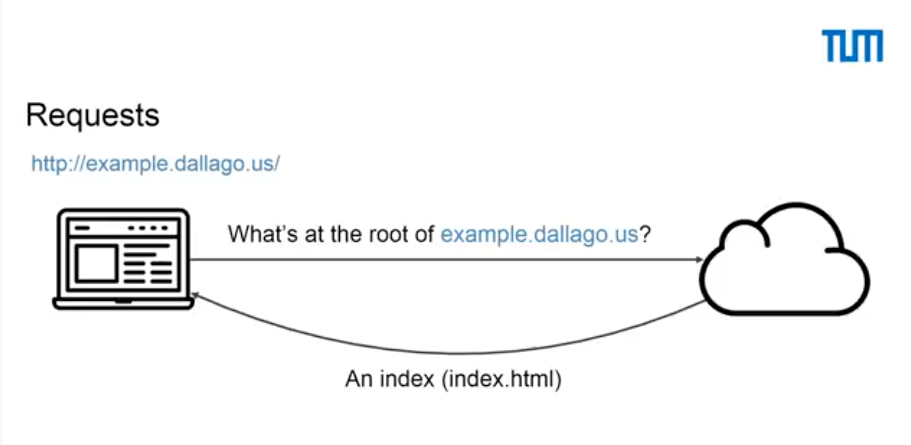
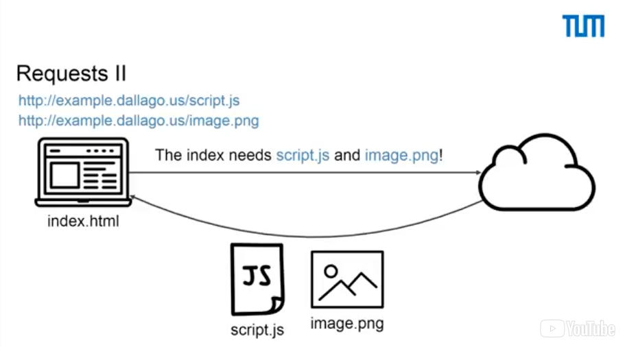
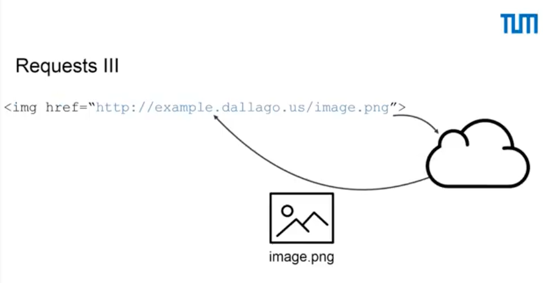
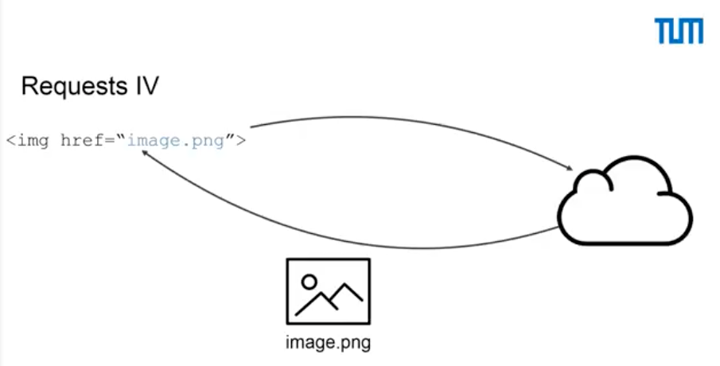
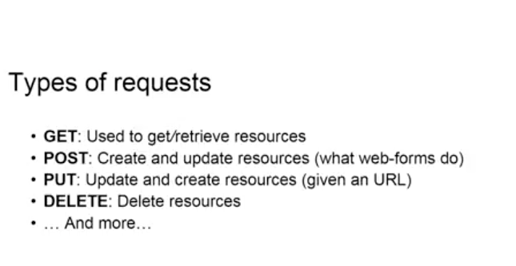
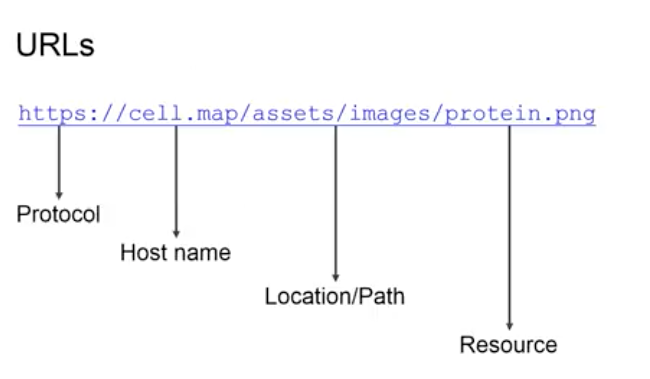
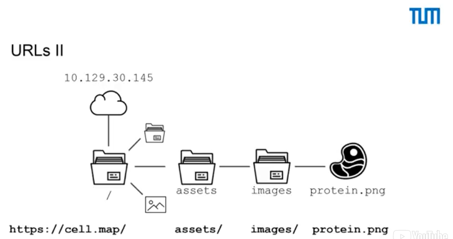

Welcome to this lecture about the anatomy of HTTP transactions! In this lecture, we're going to see how requests are made and what URL stands for.
Whenever your web browser fetches a file (a page, a picture, etc) from a web server, it does so using HTTP - that's "Hypertext Transfer Protocol". HTTP is a request/response protocol, which means your computer sends a request for some file (e.g. "Get me the file 'home.html'"), and the web server sends back a response ("Here's the file", followed by the file itself).
Let's look at the first example. What we see here is the browser that is trying to access a location on the web., which is example.dallago.us
It tries to access the route and asks the server: do you have something to deliver to me? The server will answer to the browser: yes, I have something for you and it's an HTML file, which is called index.html.
Later, when the browser executes the index.html, it will most likely require some further components, which are specified in the HTML file. These components are usually scripts and images. In this specific case, we see that the browser is asking the web server again for a script, which is called script.js and an image, which is called image.png.
If everything went according to plan, the server will then answer to the browser: yes, I have these files and there you are.
In the HTML, the locations where we find these requests are tags like these.
This is an png or image tag, which stands for a location in which we want to load an image. What we see later in the href, is a URL of where the image is to be taken from. In this case, the image is located at example.dallago.us/image.png.
Most likely, in modern web pages, you see href references like this.
What these are are relative paths. So, what we are saying here is: if we're executing our HTML file, which is located in the root, we want to access the image in the same location, which is again the root. So, we want to access the image at example.dallago.us/image.png. This is different if the HTML was, for example, loaded from a subfolder of a web server, which could be, for example, the public sub folder. So, if we're executing an HTML file, which is located in example.dot.dallago.us/public and we have an img tag, like this one, which is trying to access image.png, what we're actually asking for is the image at example.dallago.us/public/image.png.
There are different types of requests that you can perform on the web. The ones that we have seen up until now, are GET requests. They are what your browser usually always performs. There are also other types of requests, which are, for example, POST requests. They are used to create and update resources, and they're usually found in web forms on your web pages. Third type of request are PUT requests. These are conceptually similar to POST requests, but they are mainly used for updating. You can also use them to create resources, but you have to specify a precise URL where you want to put this resource in. So, if we're trying to, for example, upload an image of a cat, which is called cat.png, what we would say is: we want to put our image at the location example.dallago.us/cat.png. The last type of requests that we are going to talk about are DELETE requests. These requests are used to delete resources as the name says, so that we don't have them anymore on our web server. There are other types of requests, but we are not going to discuss about them, because they are not relevant to the slide set.
The next thing that we're going to talk about are URLs.
There are different things you want to look at when you see a URL. So, the first part is the protocol. It's https in this case, but usually you see also http. There are actually two different kinds of protocols. HTTPs stands for secure HTTP. It ensures that when you're accessing a resource, the resource comes exactly from the server that you are requesting it from. So, that you are not put in a situation of having someone between you and the web server, which can read the information that is flowing between you or your browser and the web server. The second part is the hostname. This is a friendly name for a server on the web, which is usually addressed with a set of numbers, which we are going to see in the next slide. The first part that we see here is the location or path. These are usually subfolders on your web server and it's just as if you were opening sub folders on your computer. The last part is the resource that you're going to ask and in this specific case is a png image and it's called protein.png.
So, here is a different representation of the URL that we had before.
We see in the first part the protocol and the hostname. The hostname maps to this address on the top, which is 10.129.31.45. This is actually the way addresses are thought of on the web, but you can view them similarly as the address of where you are standing right now: your home or work address. It's just within computer science. We like numbers, so we put them everywhere. The second part that we see are subfolders. In this specific case, we're accessing assets and then we're accessing images. The last part is a resource that we want to access, which is the image of this protein, which is called protein.png.
So, what we have seen up until now is JavaScript as it is used for front-end. It is used to extend normal HTML code to allow us to perform some nice and better functionalities with our code. JavaScript, in these cases, is executed within the browser or the browser's console. What we are interested in looking at next is, actually, JavaScript for back-end development. What this means is that we want to see how JavaScript can be used to answer requests, which come from the web, which is what we have seen up until now. JavaScript is also able to be interpreted as an ordinary computer language, as you would, for example, do with python or C or Java and this is also being enabled by the same framework, which is called node.js, which we will look at into later videos. That is used to create web backends or APIs, which we are also going to discuss in the next videos.